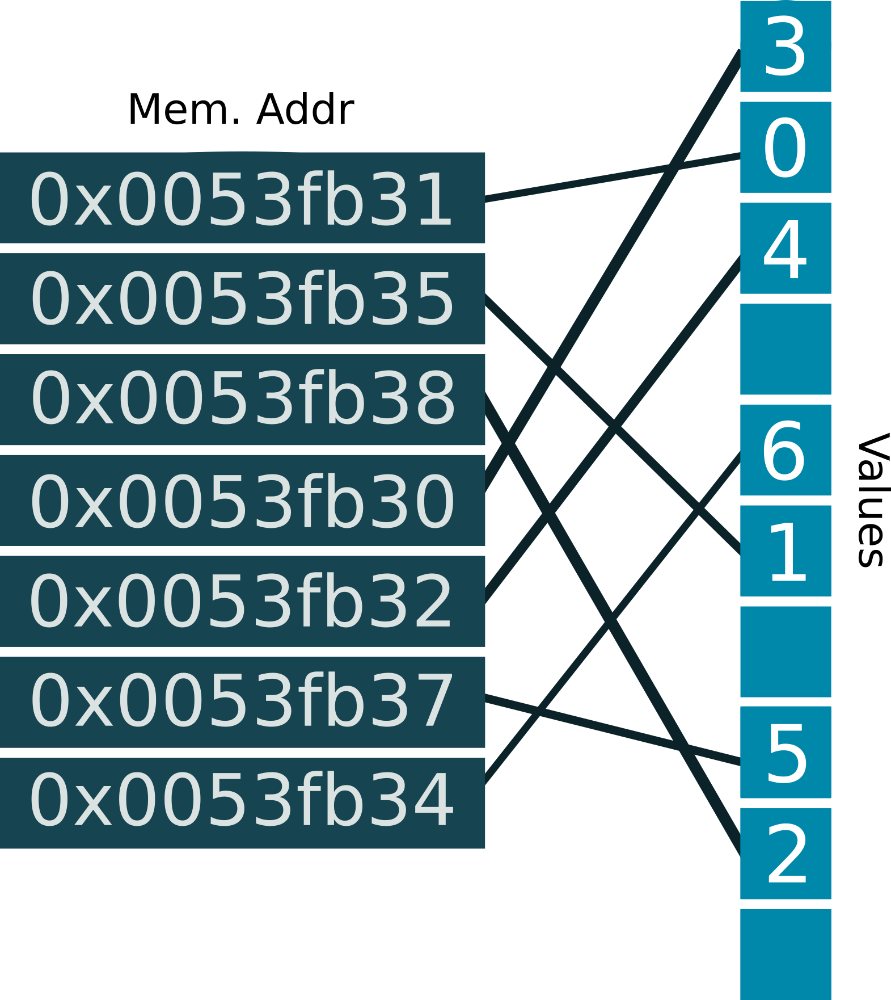
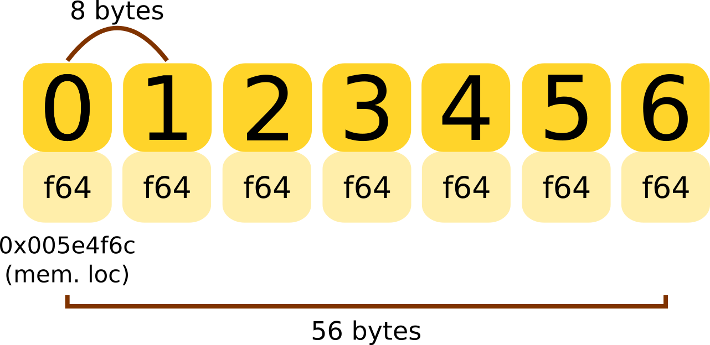
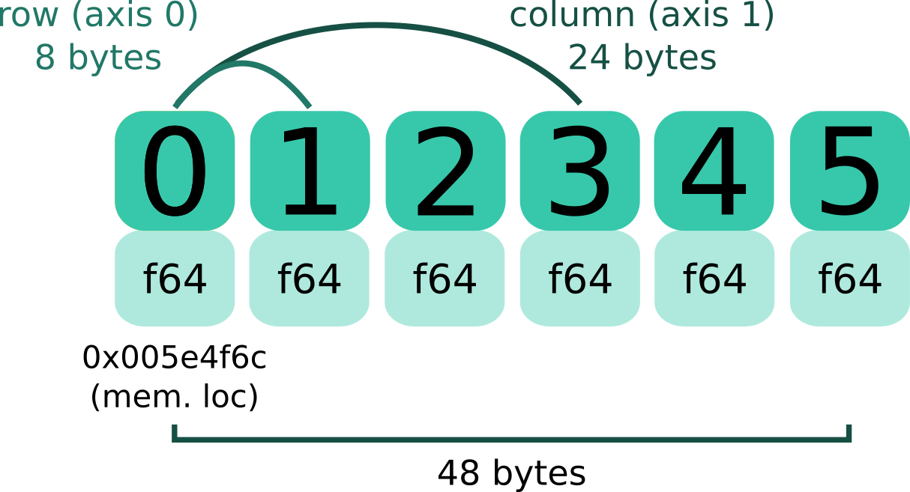
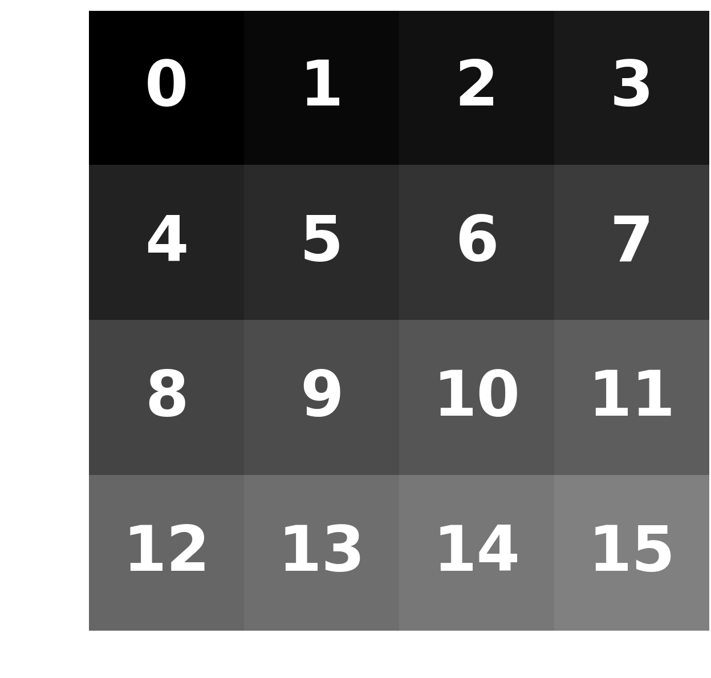

Lesson 5
Created: 8 June 2017
first of all...
Congratulations!
You have now learned the basics of programming in
Python
You should by now be familiar with the syntax
name = "Frank"
my_list = [0, 4, 1, 5, 6, 5, 1, 1]
my_dict = {"name": "Jerry", "savings": 14242.5, "age": 25}
for item in my_list:
new_item = item + 20
print(new_item)
def linear_model(x, a, b):
"""defines a linear model"""
# model definition
y = a*x + b
return y
class Customer:
"""an example class"""
def __init__(self, name, savings)
self.name = name
self.savings = savings
and the basic concepts of general purpose programming
Data Types
Iteration
Functions
Classes: objects
While you may not be entirely familiar or confidant with Python just yet
You will be!
the more you use it!
consequently you will need to use it ... or lose it
With this in mind, the next series of lessons are aimed at exposing you to Python's powerful extended library
With this in mind, the next series of lessons are aimed at exposing you to Python's powerful extended library
While last lesson I hinted that we would look at Pandas next
We need to look at another important library first
Python was not specifically designed to meet the demands of mathematical and scientific computing
as such the standard library does not
efficiently represent multi-dimensional datasets
nor provide tools for linear algebra
lists, tupes, dicts
while flexible data types (i.e. can be arbitrarily nested with any Python object)
↓are rather poor at representing mathematical constructs such as,
VECTORS & MATRICES
for example
imagine an arbitrary 2 x 4 matrix
matrix = [[1, 3, 4, 5], [3, 0, 1, 1]]
to +1 to all item values requires nesting two for loops
mrow = len(matrix)
mcol = len(matrix[0])
for i in range(mrow):
for j in range(mcol):
matrix[i][j] += 1
now imagine doing a cross-product, row-reduce, transpose, etc.
being able to effectively manipulate data underpins the basic principles of modelling
be it, empirical (statistical) or physical (process-based)
↓and so this capability has been extended into Python
introducing...
NUMPY
At the ♥ of numpy is the n-dimensional array
ndarray
...
an incredibly efficient data structure, that can reach Fortran/C-level speeds in computation time
that's very fast
the base Python sequences (lists, tuples, etc.) do not represent multi-dimensional data all that well
and this is to do with how they view memory
for example, assume this simple list
my_list = [0, 1, 2, 3, 4, 5, 6]
the values do not sit in memory sequentially
rather, sit more like this*
*exaggerated as an example
Python sequences are structured this way so that they can store different data types (float, string, etc.) and have dynamic size (grow, shrink).
however
this flexibility comes at a computational cost
generally through nested looping
ndarrays on the other hand have fixed size and are homogeneously typed
→ all values are float, string, etc.
↓
this means that array items sit in memory contiguously
(i.e. next to each other)
↓
let's look at this in detail
assume a simple array
my_array = np.array([0, 1, 2, 3, 4, 5, 6])
in memory this would be viewed as
which is better organised than this
Arrays have a permanent start position, and because every item is the same type, the stride between items is constant
The stride is the size of bytes that we must step to increment the array by one
Knowing the start position and the stride of an array, means I can get to exactly where each item is
Python is just doing simple arithmetic!
...
I have an 64bit array, so each item => 8 bytes
My array starts at the [memory address 0x0] => 0 bytes
I want the item at position 3 => 3*(8 bytes)
(0 + 24 = 24) => [memory address 0x18]
...
Ergo, we can very quickly get to any item in the array no matter how large it gets
Using this concept we can also create more complicated
N-dimensional constructs (e.g. matrices, cubes)
With a (2,3) matrix
to increment through it we multiply our stride (8 bytes) by the number of columns (3) → 8 x 3 = 24 bytes
The strided view of such a matrix looks like this in memory
so a (2,3) matrix
is represented like so
This is how arrays in C/C++ and Fortran work and allows us to exploit a concept known as
...
vectorization
...
meaning that we can apply some operation on
many values at once
↓
as we a priori know the location of all values before execution
consequently
we can represent mathematical constructs like vectors and matrices more efficiently
↓
and expose these to a whole suite of linear algebra tools
it also means I can write more Pythonic code!
for example: if I wanted to add some arbitrary value to a sequence of numbers
with lists I must do
old_list = [1, 2, 3, 4, 5, 6]
new_list = []
for item in old_list:
new_item = item + 10
new_list.append(new_item)
with arrays I can do this
old_array = np.array([1, 2, 3, 4, 5, 6])
new_array = old_array + 10
I can now operate on my array almost instantaneously
In : my_array = np.array([1, 2, 3, 4, 5, 6])
In : my_array + 10
Out: array([11, 12, 13, 14, 15, 16])
In : my_array**2
Out: array([1, 4, 9, 16, 25, 36])
which is particularly useful with functions
def quadratic(x, a, b):
return a + b*x**2
In : quadratic(my_array, a=0.5, b=1.)
Out: array([1.5, 4.5, 9.5, 16.5, 25.5, 36.5])
no need to loop through each value!
let's now look at some of the basics of numpy
array creation
before we begin...
import numpy as np
you will need to make sure you import the numpy library to use it
simplest way to create an array, is to use np.array() and pass a list or tuple of values
In : np.array((1, 4, 5, 3, 1, 1))
Out: array([1, 4, 5, 3, 1, 1])
In : np.array([[1, 4, 5], [3, 1, 1]])
Out: array([[1, 4, 5],
[3, 1, 1]])
where the level of nesting in the list/tuple denotes the number of dimensions of the array
sometimes though you may not know what values pre-populate your array
In : np.zeros((3, 3))
Out: array([[0, 0, 0],
[0, 0, 0],
[0, 0, 0]])
In : np.ones((3, 3))
Out: array([[1, 1, 1],
[1, 1, 1],
[1, 1, 1]])
in such cases you can create arrays filled with 1's or 0's
where we pass a tuple to denote the size of the matrix
or similarly, you can create an empty one
In : np.empty((3, 3))
Out: array([[6.90516063e-310, 1.40744125e-316, 1.96086529e+243],
[4.65017363e-086, 1.15297798e-259, 6.01347002e-154],
[7.06652082e-096, 7.05479222e-308, 3.95252517e-322]])
which will be filled with infinitely small or large random numbers
CAUTION:
you will then need to manually set all values
dtypes
You can also set the data type for the array on creation
↓
Denoting the stride of the array
In : np.array((2, 2), dtype=np.float64)
Out: array([[0.0, 0.0],
[0.0, 0.0]])
In : np.array((2, 2), dtype=np.int32)
Out: array([[0, 0],
[0, 0]])
In : np.array((2, 2), dtype=complex)
Out: array([[0.+0.j, 0.+0.j],
[0.+0.j, 0.+0.j]])
sequences
we can also create linear sequences of numbers, using:
np.arange(start, stop, step)
In : np.arange(5)
Out: array([0, 1, 2, 3, 4])
In : np.arange(3, 8)
Out: array([3, 4, 5, 6, 7])
In : np.arange(0, 10, 2)
Out: array([0, 2, 4, 6, 8])
where step is the step-size of the sequence
sequences
we can also create linear sequences of numbers, using:
np.linspace(start, stop, num, endpoint)
In : np.linspace(0, 5, 5)
Out: array([0.0, 1.25, 2.5, 3.75, 5.0])
In : np.linspace(0, 100, 5)
Out: array([0.0, 25.0, 50.0, 75.0, 100.0])
In : np.linspace(0, 10, 5, endpoint=False)
Out: array([0.0, 2.0, 4.0, 6.0, 8.0])
where num equals the amount of breaks in the sequence
sequences
and also log-linear sequences of numbers, using:
np.logspace(start, stop, num)
In : np.logspace(0, 4, 5)
Out: array([1.0, 10.0, 100.0, 1000.0, 10000.0])
In : np.logspace(2, 3, 5)
Out: array([100.0, 177.827941, 316.22776602, 562.34132519, 1000.0])
In : np.logspace(0, 0.5, 5)
Out: array([1.0, 1.33352143, 1.77827941, 2.37137371, 3.16227766])
where start and stop are in terms of base 10 powers
randomness
finally we can also create arrays of random numbers, using:
np.random
Uniformly randomly distributed
You can create both vectors
In : np.random.uniform(0, 1, size=(3,))
Out: array([0.65310833, 0.2532916, 0.46631077])
and matrices
In : np.random.uniform(0, 1, size=(3 ,3))
Out: array([[0.12892630, 0.31542835, 0.36371077],
[0.57019677, 0.43860151, 0.98837384],
[0.10204481, 0.20887676, 0.16130952]]
with values drawn from $U(z_{0}, z_{1})$
Normally randomly distributed
You can create both vectors
In : np.random.uniform(0, 1, size=(3,))
Out: array([0.65310833, 0.2532916, 0.46631077])
and matrices
In : np.random.uniform(0, 1, size=(3 ,3))
Out: array([[4.36027736, 4.5205802, 5.3113635],
[4.22397953, 4.69263519, 4.63347606],
[6.11971196, 4.54207758, 5.4253934]]
with values drawn from $N(\mu, \sigma)$
so what can I interact with them?
slicing, masking, shaping
accessing parts of ndarrays is done similarly as with lists
In : my_array = np.arange(5) # array([0, 1, 2, 3, 4])
In : my_array[0]
Out: 0.0
In : my_array[1:-1]
Out: array([1, 2, 3])
In : my_array[::-1]
Out: array([4, 3, 2, 1, 0])
But there are a couple of cool things unique to numpy
.reshape
ndarrays can be transformed to different n-dimensional spaces
In : zeros_1d = np.zeros(12, dtype=np.int64)
Out: array([0, 0, 0, 0, 0, 0, 0, 0, 0, 0, 0, 0])
In : zeros_2d = zeros_1d.reshape(4, 3)
Out: array([[0, 0, 0],
[0, 0, 0],
[0, 0, 0],
[0, 0, 0]])
In : zeros_3d = zeros_1d.reshape(3, 2, 2)
Out: array([[0, 0],
[0, 0]],
[[0, 0],
[0, 0]],
[[0, 0],
[0, 0]]])
all you need do is pass the shape of the new dimension
be advised
to be able to reshape an array, it needs to be square!
masking
we can also perform tests on ndarrays
In : rand_mat = np.random.normal(loc=0, scale=1, size=(4, 4)); rand_mat
Out: array([[-1.27698899, 0.83771977, -1.49011141, -1.070215 ],
[-0.20912862, 0.60457228, -1.74305823, 1.52422681],
[ 1.86357532, 1.29137792, 1.30069627, 0.91820283],
[-0.15880047, -0.96406336, -1.99077882, 0.08973073]])
In : mask = rand_mat < 0; mask
Out: array([[ True, False, True, True ],
[ True, False, True, False ],
[ False, False, False, False ],
[ True, True, True, False ]], dtype=bool)
we can then use these tests to subset our arrays
In : rand_mat[mask]
Out: array([-1.27698899, -1.49011141, -1.07021500, -0.20912862,
-1.74305823, -0.15880047, -0.96406336, -1.99077882])
or change their values
In : rand_mat[~mask] = np.nan
Out: array([[ np.nan, 0.83771977, np.nan, np.nan ],
[ np.nan, 0.60457228, np.nan, 1.52422681],
[ 1.86357532, 1.29137792, 1.30069627, 0.91820283],
[ np.nan, np.nan, np.nan, 0.08973073]])
The attaching a tilde to any boolean array inverts it
...speaking of np.nan
NumPy has special data types!
that can act as flags or placeholders in your arrays*
np.nan
np.inf
np.finite
→ represents NO value
→ represents an ∞ value
→ represents a finite value
*these will not interfere with your dtypes
and you can use these in your tests as well
In : rand_mat[~mask] = np.nan
Out: array([[ np.nan, 0.83771977, np.nan, np.nan ],
[ np.nan, 0.60457228, np.nan, 1.52422681],
[ 1.86357532, 1.29137792, 1.30069627, 0.91820283],
[ np.nan, np.nan, np.nan, 0.08973073]])
In : rand_mat[np.isnan(ran_mat)]
Out: array([[ True, False, True, True ],
[ True, False, True, False ],
[ False, False, False, False ],
[ True, True, True, False ]], dtype=bool)
or maybe
In : rand_mat[np.isfinite(ran_mat)]
Out: array([[ False, True, False, False ],
[ False, True, False, True ],
[ True, True, True, True ],
[ False, False, False, True ]], dtype=bool)
Repeated Sequences
we can also create multiples of our arrays, using
tile
In : vector = np.arange(3)
In : np.tile(vector, 3)
Out: array([0, 1, 2, 0, 1, 2, 0, 1, 2])
to conventiently create a discrete signal
In : np.tile(vector, (2, 2))
Out: array([[0, 1, 2, 0, 1, 2],
[0, 1, 2, 0, 1, 2]])
also works in many dimensions
so what can I do with NumPy?
let's start with some
basic math
NumPy offers a LOT of basic math functions
np.exp(), np.sqrt(),
you get the point
np.sin(), np.cos(), np.tan(),
np.sinh(), np.cosh(), np.tanh(),
np.log(), np.log10(), np.floor(), np.ceil(), ...
help(np)
standard functions
and ndarrays are exposed to the same basic functions as all base Python sequence types
np.sum(), np.mean(), np.min(), np.max()*
In : a_vector = np.range(1, 51)
In : np.sum(a_vector)
Out: 1275.0
In : np.mean(a_vector)
Out: 25.5
In : np.min(a_vector)
Out: 1.0
In : np.max(a_vector)
Out: 50.0
*and more mathematical reductions (e.g. $\prod$, $\sigma$) not shown here
However, where ndarrays differ
is that such functions can be performed along different dimensions/axes
Say for example this square matrix
In : square4 = np.range(16).reshape(4, 4)
In : square4
Out: array([[ 0, 1, 2, 3],
[ 4, 5, 6, 7],
[ 8, 9, 10, 11],
[12, 13, 14, 15]])
Which looks more like this
...
...
Which looks more like this
where operations may be done along its column axis
In : np.sum(square4, axis=1)
Out: array([ 6, 22, 38, 54])
Which looks more like this
and row axis
In : np.sum(square4, axis=0)
Out: array([24, 28, 32, 36])
the capability of ndarrays to respond along many dimensions
allows us to use what is called...
BROADCASTING
Broadcasting is a powerful feature of ndarrays
that allows dimensionality to be manipulated so that all arguments are equivalent in shape
for example
array operations like this → can be visualised as this
In : vector = np.array([0, 1, 2, 3])
In : vector + 3
Out: array([[ 3, 4, 5, 6])
where 3 is assumed as a 1-d array with the same value for all entries
and so a simple matter of addition to adjacent elements
example from jbloom https://github.com:profjsb/python-bootcamp
Matrices broadcast in a similar manner with scalars
Similarly for column-cast array
or a row-cast array
or you may be operating on two arrays along different axes
Be aware that
For broadcasting to work, particularly in multiple dimensions, arrays must have compatible shapes such that they can align
But if you see this old friend
ValueError: frames are not aligned
Just check that your arrays are along the correct axis
(you likely need to transpose or reshape)
broadcating bring us to the last but most important thing
and something NumPy is really good at
LINEAR ALGEBRA
SUMMARY
remember
...
the ndarray has fixed size
and is of one data type
lists on the other hand have
dynamic size and can be
of any data type
we ♥ Numpy
we ♥ Vectorization
we ♥ Python